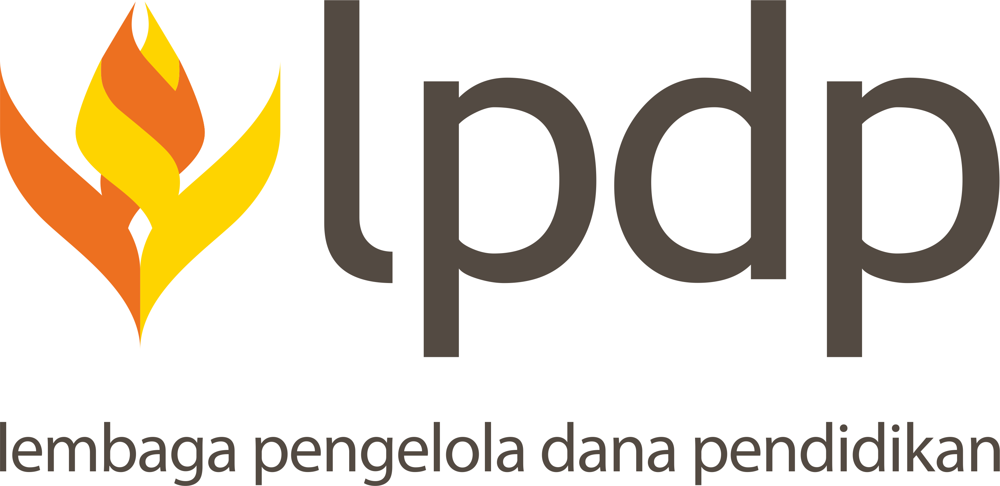

Wageningen University
We have a growing set of projects, nationally funded as well as through international collaboration. Below you can see a list of ongoing projects.
Greenhouse agriculture is a promising solution to meet growing global food demand while minimizing environmental impact. However, climate control in greenhouses remains largely dependent on manual adjustments and expert knowledge, making it inefficient and hard to scale. Due to the nonlinear interactions among environmental variables, crops, and infrastructure, both traditional simulation-based models and modern data-driven AI methods face significant limitations. While physics-based models are interpretable, they require precise tuning and are sensitive to uncertainty; conversely, deep learning models offer strong performance but lack generalizability across different greenhouse setups due to limited data diversity and missing contextual information.
To address these challenges, this project proposes an adaptive digital twin (DT) framework for precision greenhouse agriculture. The framework combines simulation, deep learning, and deep reinforcement learning (DRL) to enable intelligent forecasting and control. The overall system will be modular and extensible, following Model-Based Systems Engineering (MBSE) principles.
This research project focuses on optimizing crop growth in plant factories through the integration of digital twin technology and artificial intelligence. By constructing a virtual representation of the plant factory using multi-source data, crop models, and spatiotemporal knowledge graphs, the project seeks to enable real-time monitoring, prediction, and control of crop growth conditions. The methodology includes developing AI-based dynamic prediction models and coupling various functional models to enhance decision-making and resource efficiency. Ultimately, the project aims to reduce manual labor and contribute to the advancement of smart agriculture.
Small-scale horticulture faces challenges in optimizing productivity and resource management. These inefficiencies negatively impact crop management, water and energy use, microclimate regulation, and pest control, undermining both profitability and sustainability. Small-scale horticulture is essential for maintaining local food security by providing fresh produce and income opportunities for farmers. This project aims to improve decision-making in smart small-scale horticulture by adopting digital twins. Initial studies have shown that digital twins have the potential to revolutionize the challenges in enhancing decision-making processes. However, their application in a precision horticulture and small-scale farming context with limited resources creates new challenges. This project will focus on the small-scale horticulture greenhouses in North Bali and validate the provided results in this context.
